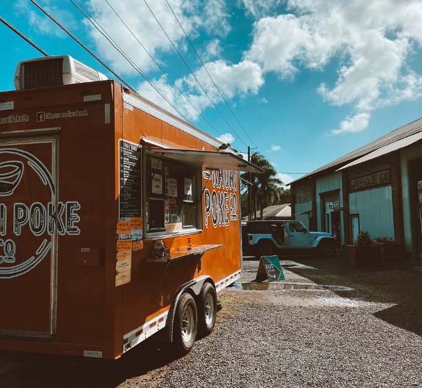
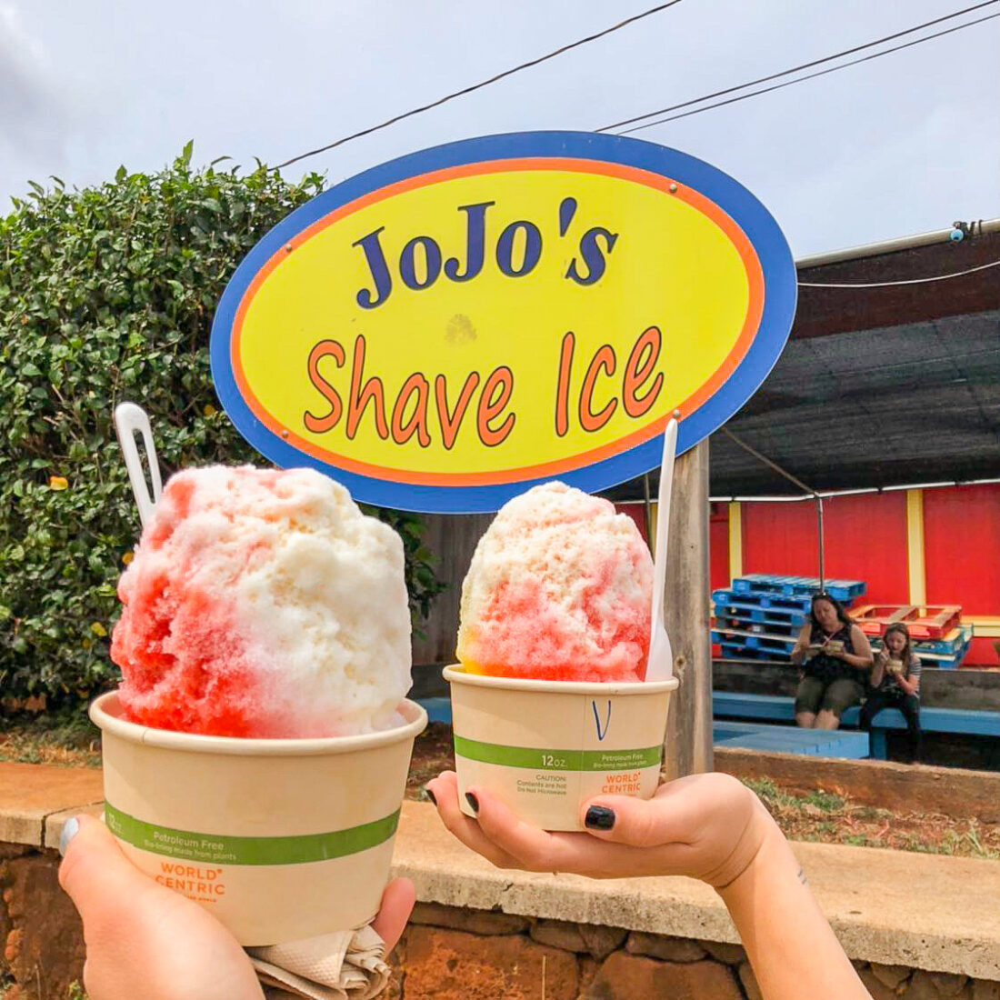

My name is Olivia and I love to travel to Hawai’i. Over the past couple years, my family and I have visited 3 islands in Hawaii; O’ahu, Kaua’i and Maui. One of the things I like most about this island is the cuisine. In my opinion, not only is the food delicious, but it allows visitors to get a taste for the beautiful culture. In this Blog, I have featured famous restaurants, food trucks and grocery stores worth visiting. Hope you enjoy and get to visit the beautiful island of Hawai’i!
 My name is Olivia and I love to travel to Hawai’i. Over the past couple years, my family and I have visited 3 islands in Hawaii; O’ahu, Kaua’i and Maui. One of the things I like most about this island is the cuisine. In my opinion, not only is the food delicious, but it allows visitors to get a taste for the beautiful culture.
 My name is Olivia and I love to travel to Hawai’i. Over the past couple years, my family and I have visited 3 islands in Hawaii; O’ahu, Kaua’i and Maui. One of the things I like most about this island is the cuisine. In my opinion, not only is the food delicious, but it allows visitors to get a taste for the beautiful culture.